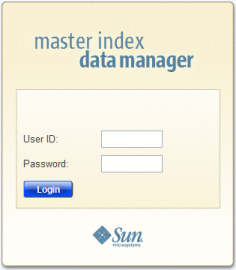

Working with the Master Index Data Manager
The MIDM is a web-based application, which means you access the application through an internet browser. The MIDM uses standard web-based features, such as hyperlinks, data fields, and action buttons, to help you enter information and navigate through the different pages.
The following topics provide basic information about the design of the MIDM and logging on and off the application:
Requirements
The MIDM is supported on both Mozilla Firefox and Internet Explorer. For either browser, make sure that pop-up windows are allowed for the MIDM URL and the JavaScript is enabled. Additionally, if you are working with sensitive data, you might also want to disable the feature that automatically fills in field values as you type. These options are configured on the Options (Firefox) or Internet Options (Internet Explorer) window accessed from the Tools menu.
Logging on to the Master Index Data Manager
Before you can use the MIDM, you must first log in to the application by entering the correct URL in your web browser and then specifying your login ID and password. Make sure you have a user ID and password for the master index application before logging in. The application server running the master index application must be started before you can log in to the MIDM.
The URL for the MIDM is:
http://host:http_port/app_nameMIDM
where
host is the name of the server machine.
http_port is the HTTP port number of the application server.
app_name is the name of the master index application.
Note - The “MIDM” at the end of the URL is case-sensitive and must be entered in all capital letters.
The HTTP port number for the Sun Java System Application Server is listed in the domain.xml file in the http-listener element (8080 by default). The domain.xml file is located in app_server_home\domains\domain_name\config. The port number is also listed on the Client and Server page of the HTTP Monitor of the NetBeans IDE.
To Log in to the MIDM
- Launch a web browser.
- In the Address field, enter the appropriate URL.
The login page appears.
Figure 1 MIDM Login Page
 - In the upper right portion of the page, select the language for the MIDM display.
- Enter your user ID and password in the appropriate fields.
- Click Login.
The initial page appears. (By default, the initial page is the Record Details page, but this is configurable.)
Note - After a certain period of inactivity, the MIDM automatically logs off and returns you to the Login page when you try to perform an activity on the MIDM. Simply reenter your user name and password to access the MIDM again. The system administrator can set the inactivity period at the server level in the session-timeout element of default-web.xml (in appserver_home\domains\domain_name\config) or at the application level in web.xml in the master index application .war file (located in the deployment .ear file) or in the deployment folder itself. The application level overrides any values set at the server level. The default inactivity period is 30 minutes.
Master Index Data Manager Security Permissions
Security for the MIDM is defined at the function level. You might not be able to perform all the functions described in this guide depending on the security permissions you are assigned. For more information about functions you can perform, see your system administrator. Security for the MIDM is defined in the application server. For information about defining security for the MIDM, see Defining Master Index Security
Master Index Data Manager Navigation Tips
The MIDM provides hyperlinks and command buttons to help you access and move through the MIDM pages. When you place the cursor over links and images on the MIDM pages, tooltips appear to provide additional information. Information is also provided to facilitate the use of screen readers and other assistive technology.
Navigating the MIDM Functions
The actions you can perform on the MIDM are grouped into these primary functions: Dashboard, Duplicate Records, Record Details, Assumed Matched, Transactions (history), Source Record, Reports, and Audit Log. The main menu on all MIDM pages provides hyperlinks to each of these functions, as shown in the following figure. The first page to appear for each function except the Source Record function is a search page. The names of these headings can be modified for your application.
Figure 2 Main Menu Navigation Tools
Dashboard – The Dashboard provides a summary of recent transactions, quick links to commonly used functions, and quick lookup functions. The information, links, and lookup functions on this page can be configured by the system administrator.
Duplicate Records – The Potential Duplicate function allows you to perform a search for potential duplicate profiles. Potential duplicate profiles are profiles whose matching probability weight indicates they might match but is not high enough to automatically match the two profiles. From the associated pages, you can compare, merge, or resolve potential duplicate profiles.
Record Details – The Record Details function allows you to perform a search for an object profile or set of object profiles in the master index application. From the associated pages, you can compare two object profiles, compare records in one object profile, view all information for one object profile, update an object profile or source record, view a transaction history of an object profile, view an object’s potential duplicates, and merge object profiles or source records.
Assumed Matches – The Assumed Matches function allows you to perform a search for any profiles that were updated by an assumed match transaction. An assumed match occurs when either the system and local ID of an incoming record match the system and local ID of a record in the master index database or when the matching probability weight is high enough to indicate that two records represent the same object. From the associated pages, you can view and reverse assumed match transactions.
Transactions – The Transactions function allows you to perform a search for transaction histories. From the Transaction History pages, you can compare information about an object before and after a transaction occurred, select object profiles to unmerge, and view a merge history for an object profile. From associated Transaction History pages, you can unmerge object profiles.
Reports – The Reports function allows you to display and print reports about certain transactions performed both from the MIDM and from messages sent in from external systems. You can run reports from either the MIDM or from a command line.
Source Record – The Create Source Record function allows you to create new object profiles by creating a source record. When you save the information in the source record, the master index application automatically generates the SBR using the survivor calculator. You can also edit and merge source records from the Source Record page.
Audit Log – The Audit Log function allows you to perform a search for audit log entries. From the Audit Log pages you can view information about transactions in which data about an object was accessed through the MIDM. This helps enforce HIPAA privacy rules for healthcare master indexes.
Navigating the MIDM Detail Pages
The detail pages display the SBR of the object profile on the left and you can expand the pages to view source records on the right. Child objects appear below the parent object, and you can expand and collapse the information for each type of object. If you are viewing a comparison of object profiles, you can expand the source records of one object profile at a time. The following figure illustrates a sample of the Record Details page and shows the SBR to the left of three source records. Each detail page includes scrollbar navigation within the larger browser window so you can control the display of data.